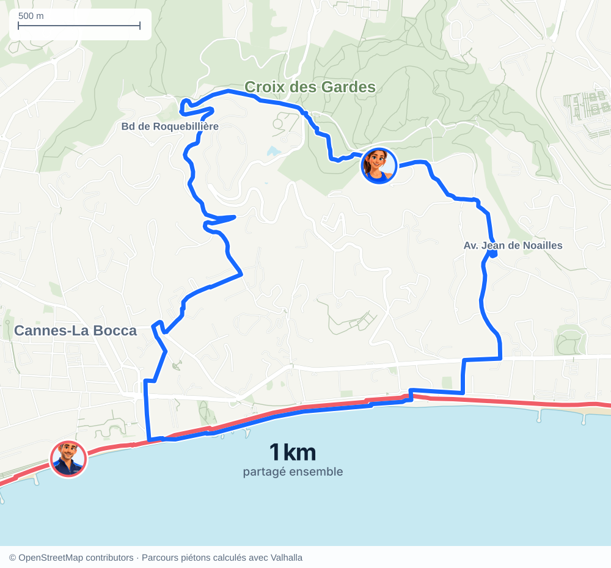
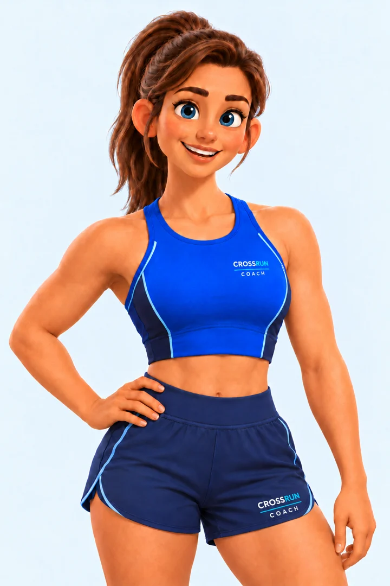
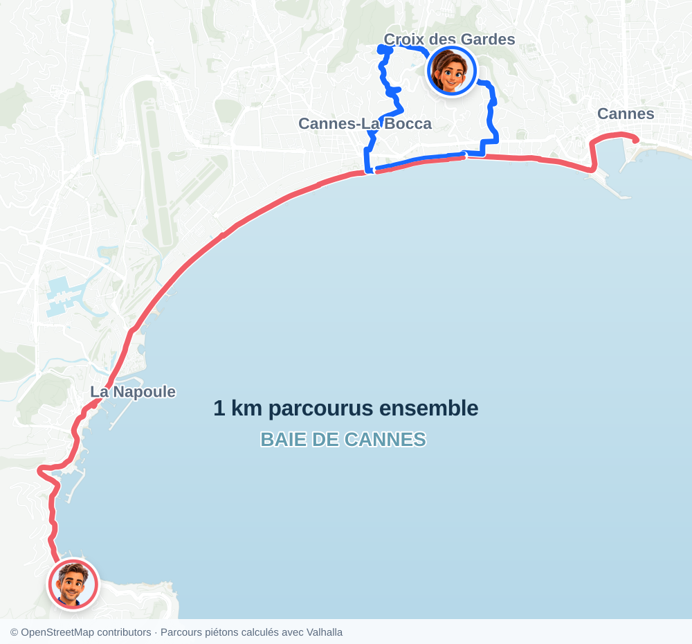
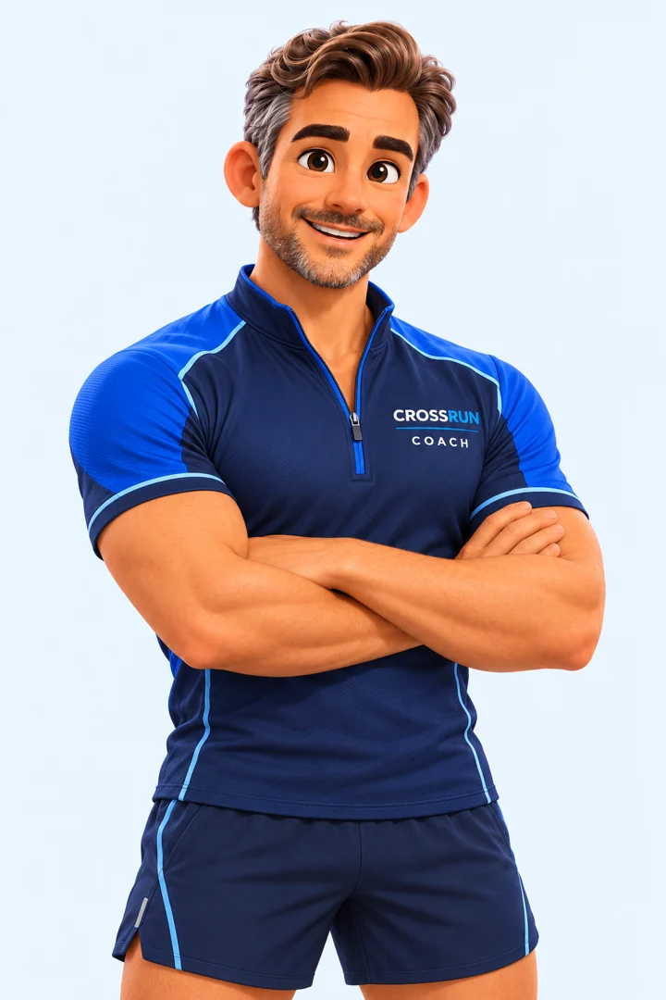

Cours.
Croise.
Va plus loin.
Retrouve les runners croisés, progresse avec ton coach personnel et relève des défis, seul ou en groupe.
Bêta iPhone sur TestFlight · 18 ans et plus


Ton programme.À ton rythme
Le même chemin.
Au même moment.
Vous vous croisez pendant une sortie ? CrossRun retrouve les runners croisés grâce aux parcours enregistrés. À vous de prolonger la rencontre.
- 1Chacun lance sa course.
Deux runners, deux parcours.
- 2Vos chemins se rejoignent.
Ici, Paul et Laura partagent 1 km au bord de mer.
- 3Vous choisissez de vous retrouver.
Un Wave, puis une conversation si l’envie est réciproque.
Le croisement crée l’occasion. L’échange reste un choix.


Ton prochain cap,
à ton rythme.
Reprendre la course, courir 5 km ou préparer un marathon : ton coach construit un programme selon ton niveau, ton objectif et tes disponibilités.
Tu retrouves tes séances, ta prochaine sortie et ta progression. Tu sais où tu vas, et comment avancer.
Découvrir le coachChacun court.
Tout le groupe avance.
Retrouve ton groupe, relève un défi commun et cumulez vos kilomètres. Chaque sortie fait avancer l’objectif collectif.
Découvrir les défisensemble.
Un objectif commun.
Les efforts de chacun.
Ta course mérite d’être gardée.
Courses GPS · Historique · Badges · Partage
On se croise
sur CrossRun ?
La bêta est gratuite, sur iPhone via TestFlight.